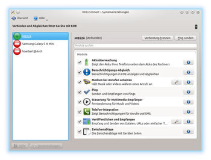

KDE Connect
Dieser Artikel wurde für die folgenden Ubuntu-Versionen getestet:
Ubuntu 16.04 Xenial Xerus
Ubuntu 14.04 Trusty Tahr
Zum Verständnis dieses Artikels sind folgende Seiten hilfreich:
KDE Connect ist ein Projekt, um den Plasma Desktop des KDE-Projekts mit unterschiedlichen mobilen Geräten im Heimnetzwerk zu verbinden. Für Desktop-Umgebungen mit AppIndicator-Unterstützung (wie z.B. Unity) gibt es auch eine Variante. Umgesetzt ist KDE Connect mit einem Serverdienst, der auf dem Desktop-Gerät läuft, und einer Client-Anwendung auf dem mobilen Gerät, welche über ein gesichertes Netzwerkprotokoll miteinander interagieren. Derzeit gibt es die mobile Anwendung für Android- und Blackberry-Geräte, eine Version für iOS ist laut Angabe der Entwickler in Arbeit.
Installation¶
Desktop-Komponente¶
Die Komponente für den Desktop ist seit Kubuntu 15.10 standardmäßig installiert. In Kubuntu 14.04 kann sie direkt aus den Quellen installiert werden [1]:
kdeconnect (universe)
 mit apturl
mit apturl
Paketliste zum Kopieren:
sudo apt-get install kdeconnect
sudo aptitude install kdeconnect
Backports (Ubuntu 14.04)¶
Wer unter Ubuntu 14.04 eine neuere Version des Programms nutzen möchte, der kann das Programm einfach aus den Backports installieren. Dafür muss lediglich folgendes Paket installiert werden:
kdeconnect/trusty-backports (universe)
mit apturl
Paketliste zum Kopieren:
sudo apt-get install kdeconnect/trusty-backports
sudo aptitude install kdeconnect/trusty-backports
Dabei ist zu beachten, dass es sich um eine Version handelt, die aus der aktuellen Entwicklerversion zurückportiert wurde. Mehr Informationen dazu hier. Die Unterschiede der beiden Versionen werden im Abschnitt KDE Connect näher erläutert.
KDE-unabhängige Variante¶
Eine angepasste Version (Fork) für Desktop-Umgebungen mit AppIndicator-Unterstützung (wie z.B. Unity oder Xfce) kann aus einem PPA installiert werden. Momentan sind nur Pakete ab Ubuntu 16.04 verfügbar.
Adresszeile zum Hinzufügen des PPAs:
ppa:webupd8team/indicator-kdeconnect
Hinweis!
Zusätzliche Fremdquellen können das System gefährden.
Ein PPA unterstützt nicht zwangsläufig alle Ubuntu-Versionen. Weitere Informationen sind der  PPA-Beschreibung des Eigentümers/Teams webupd8team zu entnehmen.
PPA-Beschreibung des Eigentümers/Teams webupd8team zu entnehmen.
Damit Pakete aus dem PPA genutzt werden können, müssen die Paketquellen neu eingelesen werden.
Folgende Pakete müssen installiert werden:
indicator-kdeconnect
kdeconnect
mit apturl
Paketliste zum Kopieren:
sudo apt-get install indicator-kdeconnect kdeconnect
sudo aptitude install indicator-kdeconnect kdeconnect
Gnome¶
Nutzer von GNOME Shell sollten die KDE Connect / MConnect Gnome Extension anstatt von Indicator KDE Connect nutzen. Diese Erweiterung hat den Vorteil, dass keine Fremdquellen oder zusätzlichen Abhängigkeiten benötigt werden. Außerdem funktioniert die Integration in den Standard-Dateimanager Nautilus.
Installation ist bequem über die Gnome Extensions-Seite möglich: https://extensions.gnome.org/extension/1272/mconnect/. Das Grund-Packet kdeconnect muss natürlich trotzdem installiert werden.
kdeconnect
mit apturl
Paketliste zum Kopieren:
sudo apt-get install kdeconnect
sudo aptitude install kdeconnect
Alternative Implementierung MConnect¶
MConnect ist eine alternative Implementierung des KDE Connect-Protokolls. Ziel ist, eine schlanke Alternative zu KDE Connect zu schaffen, die möglichst wenig Abhängigkeiten hat, also für die nicht wie für KDE Connect etliche KDE-Bibliotheken benötigt werden.
Da MConnect (noch) nicht in den offiziellen Packet-Quellen enthalten ist, ist im Moment KDE Connect vorzuziehen.
Mobile Anwendung¶
Die mobile Anwendung für Android kann über F-Droid  oder aus dem Google Play Store
oder aus dem Google Play Store  installiert werden.
installiert werden.
Einrichtung¶
Nachdem beide Komponenten installiert worden sind, müssen die beiden Geräte ähnlich wie bei Bluetooth gekoppelt werden. Dazu startet man zuerst die mobile Anwendung. Dort werden dann alle Geräte aufgelistet, die sich im selben Netzwerk befinden und auf denen KDE Connect installiert ist. Nachdem das entsprechende Desktop-Gerät ausgewählt worden ist, kann eine Verbindung angefordert werden, welche im Anschluss noch vom Desktop aus bestätigt werden muss. Nun sind die Geräte gekoppelt, und man kann KDE Connect benutzen.
Bedienung¶
Nach der Einrichtung können beim Desktop-Gerät mit KDE unter "Systemeinstellungen -> KDE-Connect" die für die verschiedenen mobilen Geräte aktivierten Funktionen von KDE Connect de-/aktiviert und konfiguriert werden.
Unter Unity können die KDE-Connect-Einstellungen im Terminal mit dem Kommando kcmshell4 kcm_kdeconnect geöffnet werden.
Folgende Funktionen stehen zur Verfügung:

"Akkuüberwachung": Stellt Informationen über den Akku des mobilen Gerätes unter KDE zur Verfügung. So werden beispielsweise Warnungen bei niedrigem Akku-Stand per knotify an den Desktop gesendet.
"Benachrichtigungs-Abgleich" - Leitet alle Benachrichtigungen des mobilen Geräts per knotify an den Desktop weiter.
"Medium bei Anrufen anhalten" - Hält bei Anrufen auf dem Mobil-Gerät Videos oder Musik auf dem Desktop an.
"Ping" - Sendet eine einfache Benachrichtigung vom Mobil-Gerät an den Desktop oder umgekehrt. Dient vor allem dem Testen der Verbindung.
"Steuerung für Multimedia-Empfänger" - Stellt auf dem Mobil-Gerät eine Fernbedienung für einen auf dem Desktop laufenden Mediaplayer bereit.
"Telefon-Integration" - Stellt Benachrichtigungen für eingehende Anrufe oder Textnachrichten auf dem Desktop dar.
"Veröffentlichen und Empfangen" - Ermöglicht das Senden von Dateien vom Mobil-Gerät zum Desktop.
"Zwischenablage" - Ermöglicht die wechselseitige Verwendung der Zwischenablage zwischen Mobil-Gerät und Desktop.
"Datei-Browser für entfernte Systeme" - Ermöglicht das Navigieren im Dateisystem des Mobil-Geräts über den Dateimanager des Desktop-Geräts (erst ab Version 0.7)
"Touchpad" - Ermöglicht die Steuerung des Desktop unter Verwendung des mobilen Gerätes als Touchpad inkl. rudimentärer Multi-Touch-Unterstützung, z.B. für den Bildlauf (erst ab Version 0.7).
"SMS senden" - Direkt Antworten über KDEconnect oder über KAddressBook.
SMS über Kaddressbook versenden¶
Als erstes benötig man die ID seines Mobiltelefons. Diese erfährt man mit der KDE-Connect-CMD.
kdeconnect-cli -l - Samsung Galaxy Note 3: 196789997488484a (paired and reachable) 1 device found
Aus dieser ergibt sich nun folgendes Kommando das im Kaddressbook unter "Einstellungen --> Kaddressbook einrichten" bei "SMS Senden" eingetragen wird.
kdeconnect-cli -d 196789997488484a --send-sms %t --destination +%N
Das Kommando geht von einer Ländervorwahl mit + aus.
Problembehebung¶
Sollte die Touchpadsteuerung nicht funktionieren, müssen möglicherweise die Ports 1714 bis 1764 für TCP und UDP geöffnet werden.
Stürzt das Programm beim Verbinden ab, ist möglicherweise die Konfigurationsdatei fehlerhaft. Um das Problem zu behen, sollte man einfach die Datei in
~/.kde/share/config/kdeconnectrc
löschen.
- Erstellt mit Inyoka
-
 2004 – 2017 ubuntuusers.de • Einige Rechte vorbehalten
2004 – 2017 ubuntuusers.de • Einige Rechte vorbehalten
Lizenz • Kontakt • Datenschutz • Impressum • Serverstatus -
Serverhousing gespendet von